|
|||||||||||||||||||||||||||
|
|||||||||||||||||||||||||||
|
蔵王山スキー |
| 開 催 日 | ２００９年２月２１〜２２日 | |||
| リーダー | 木村喜代志 | |||
| 報 告 者 | 小林義亮 | |||
| 参加者数 | ２０名 （会員２０名） | |||
| どうもここ数週間の天気は週末に荒れる傾向が定着してしまったようだ。２０日（金曜）に蔵王に入った前泊組は強風、雨に見舞われて、ゲレンデも閉鎖させる悪天候に出鼻をくじかれた。 ２１日も風が強く、稜線の通過は困難でゲレンデスキーに徹した。２２日は快晴になったが依然として稜線は強風が吹き荒れて地蔵山までがやっとで、あとは樹氷原を楽しみ、後はゲレンデを滑りまくった。 |
| １日目 ２月２１日（土） |
| ２１日朝東京を発って１０時過ぎに坊平に入る。前日滑れなかった前泊組に急かされ大慌てで準備をして蔵王温泉ゲレンデに移動する。風が強いため稜線の縦走は明日の天気に任せて、今日はゲレンデスキーに徹する。コースを熟知した木村さんと粕谷さんをリーダーに、２組に分けてバンバン滑った。上の軌跡は小松崎さん提供。 |
| 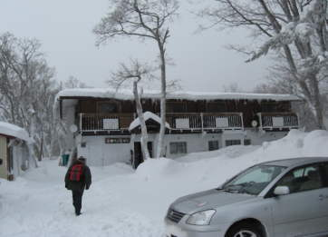 | 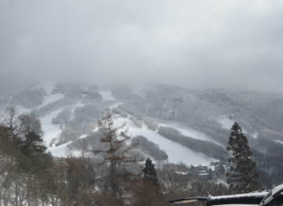 | |
| 雪に埋もれた上坂ペンションに入る | 南端の龍山ゲレンデ駐車場からみるゲレンデ。南斜面なら風も弱かろうとの予想と異なり、滑りはじめからまともに吹き付ける強風の挨拶を受ける。 | |
| 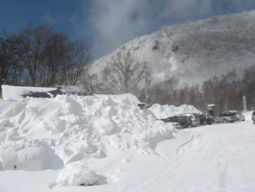 | 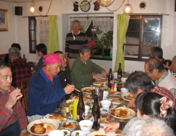 | |
| 時折晴れ間は見えるが、地吹雪も激しい。上部は−１２度。木村、粕谷両リーダーの先導で、軌跡に見る通り蔵王スキー場のゲレンデ北半分をほぼ総なめした。 | タップリ滑った後は、立ち寄り湯で暖まり、後はペンション心づくしの食事に舌鼓。いろいろ楽しい話題に盛り上がった |
| ２日目 ２月２２日（日） |
| 朝窓を開けると無風、快晴。今日こそ縦走できるか、期待が広がる。 |
| 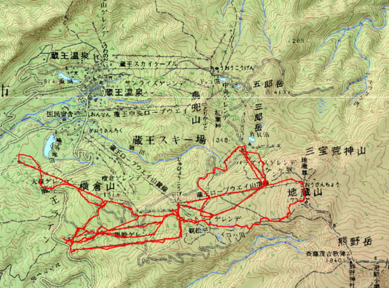 |
| 本日の軌跡です（小松崎さん提供）。私の安いGPSは低温のためうまく作動しませんでした。 |
| 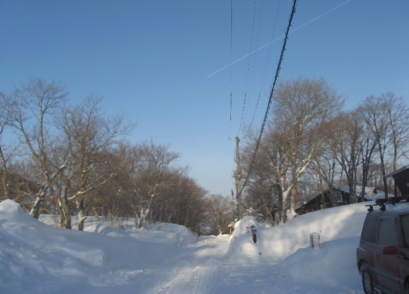 | 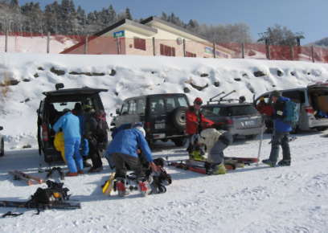 | |
| 真っ青な空に北へ向かう飛行機雲が伸びる。ペンション村にて | 昨日はろくに滑れなかったスキーヤーが殺到して中央の駐車場は満員。空いている黒姫ゲレンデから上に上がる。この辺りは当地を知り尽くした粕谷リーダーの真骨頂。 | |
| 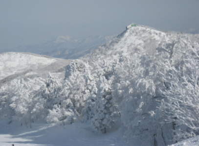 | 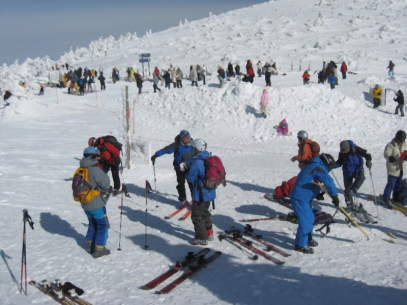 | |
| 黒姫ゲレンデ上部には昨夜の新雪が光る | シールを着けて、樹氷見物やざんげ坂を滑るスキーヤーと別れて、地蔵山へと向かう。麓は無風だが、ここまで上がってくると風が強い。 | |
| 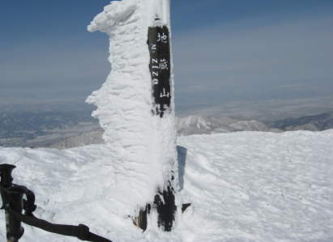 | 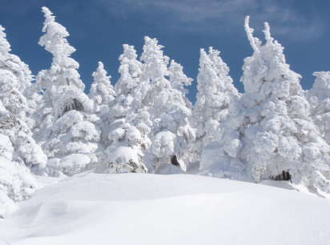 | |
| 少しの上りで地蔵山。月山、朝日などの大展望が広がる。しかしここは強風が吹き荒れていて縦走は諦めて樹氷原を滑ることとなる。 | 樹氷 |
| 以下は樹氷原コースの様子です |
| 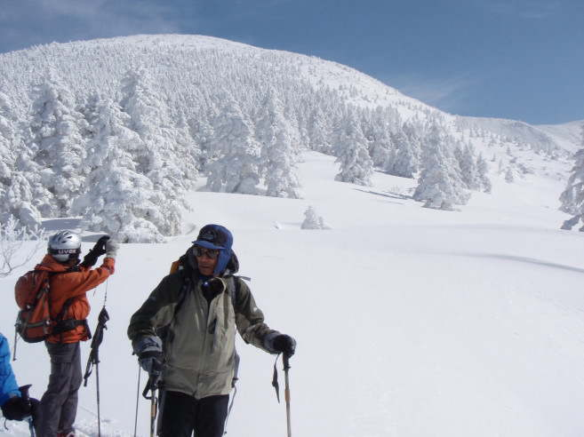 |
| 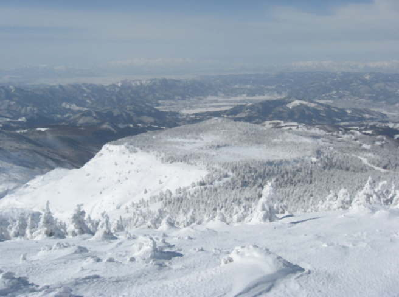 |
| 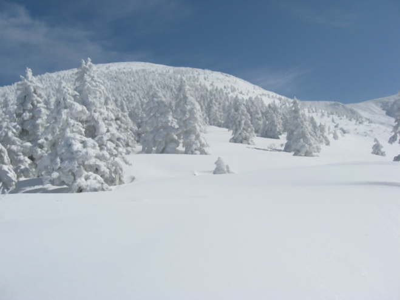 |
| 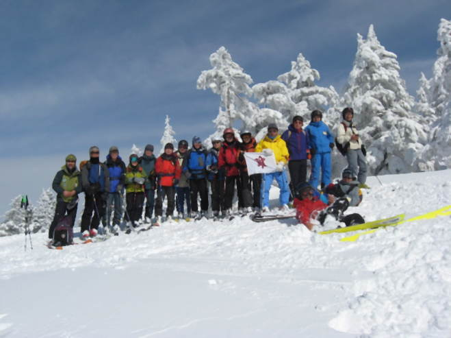 |
| 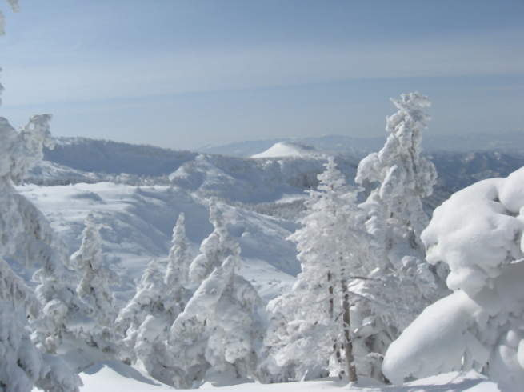 |
| 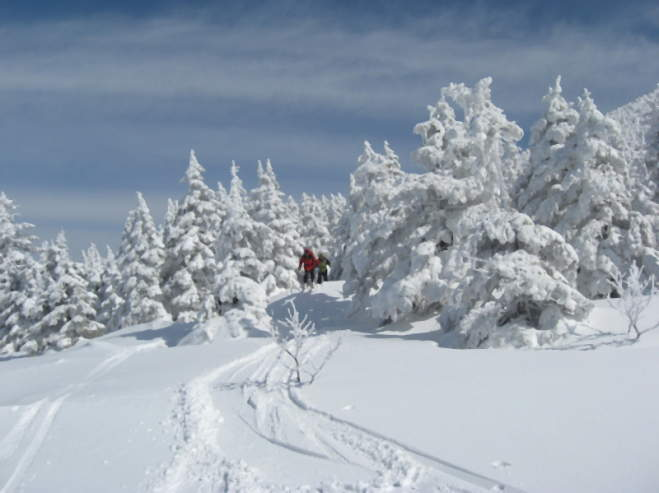 |
| 樹氷原を滑り降りた後は、青森３人組は下山。東京組は蔵王南側ゲレンデを滑りまくって帰路に向かった。今回は木村、粕谷両リーダーのもと楽しいツアーを行うことができました。御礼申し上げます。 |